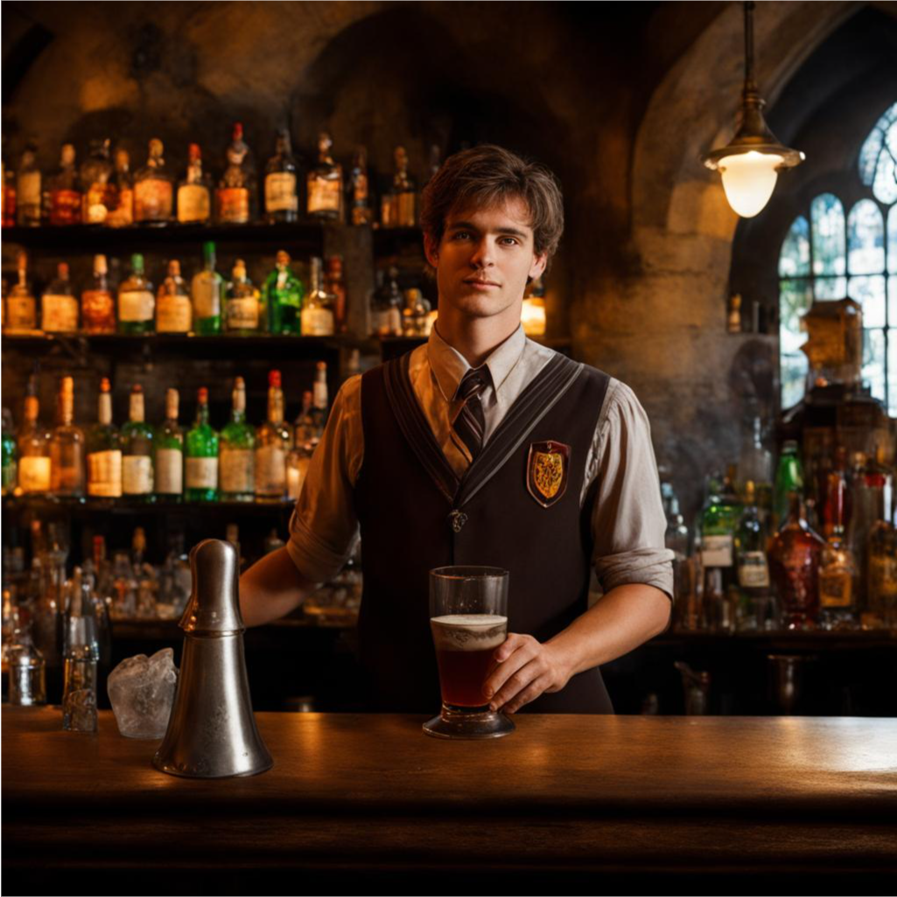

О нас
Кулинарное наследие - это уютный бар, где можно попробовать блюда и напитки из мира Гарри Поттера. Интерьер выполнен в деревянном стиле, на стенах - картины, на полках - артефакты. Бармены могут приготовить любые напитки и рассказать интересные факты о волшебном мире.